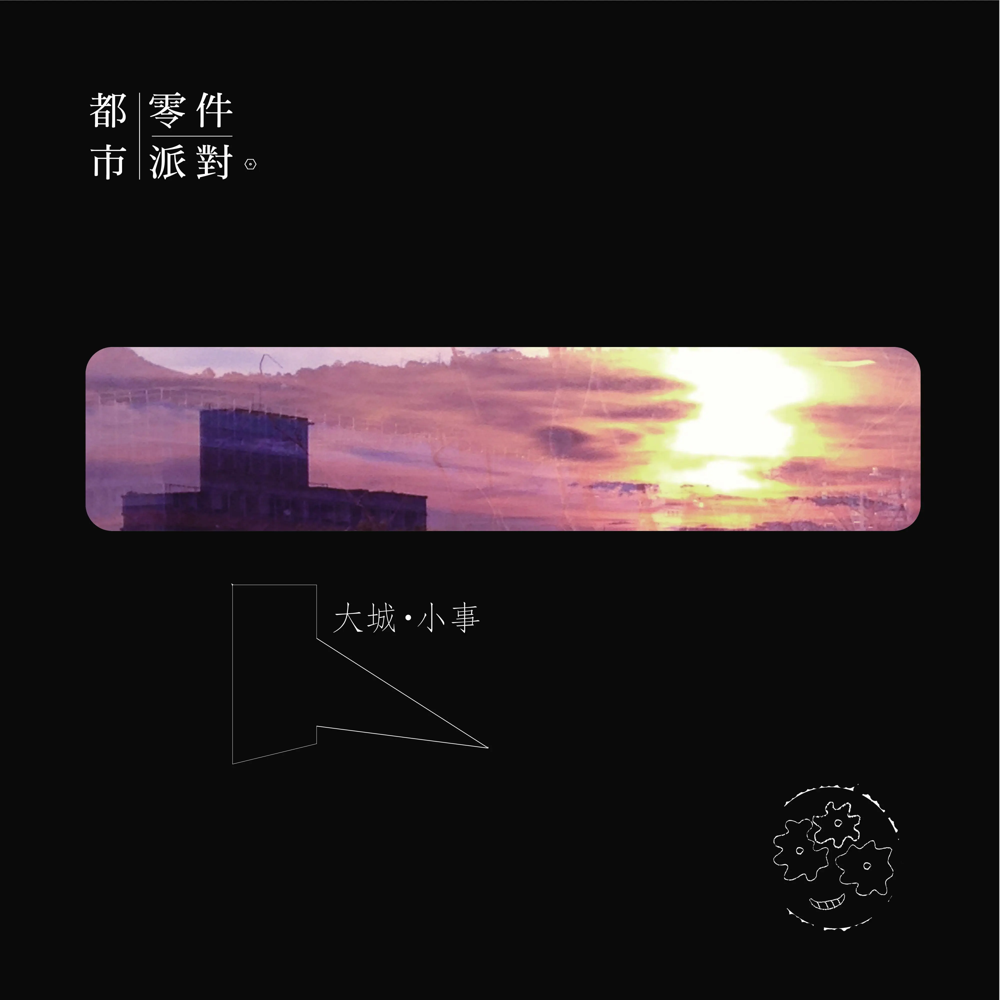

Album#40
大城•小事
{kind=link}

专辑信息
- 专辑名称： 大城•小事
- 歌手： 都市零件派对
- 年份： 2024-12-20
- 风格： 流行
- 时长： 約 22 分鍾

从 我的聲音旅程 || 構成自己的 42 張專輯 翻到的一張専輯，喜歡主唱的聲音、歌曲的旋律，和聲也好聴。編曲聴着比较簡单，主要就是木吉他，但不会覚得单調，还蠻好聴的。専輯里就 5 首歌，我都喜歡，有的旋律活泼一些，有的則更抒情些，最喜歡的是「梦奇地」。
關於都市零件派對：
「 我們都是生活中的小零件，日以繼夜地在這城市裡努力為自己的理想發聲，透過音樂丟掉生活中的繁雜瑣事，開一場熱情奔放的派對。」
都市零件派對是由身高 178 公分主唱 Bibi 與吉他手 (陳)世錦 所組成的雙人民謠組合，是你身邊喜歡音樂的朋友，透過音樂傳達快樂與愛，讓生活中的增添色彩。我們用輕鬆的語調和略帶成熟的觀點述說著每首歌，音樂上以吉他為出發，加入不同素材聲響，讓畫面更為遼闊繽紛，題材上小至個人內心獨白，大至關心整個世界環境，陪伴著大家一起無奈苦笑著瑣事，一起哼唱互相安慰，一起度過現實世界中的喜怒哀樂。
TRACKLIST
黑孔雀
red 亲吻谁的侧脸
不想成为百人斩中的某位
blue 眼角湛蓝泪水
只想笑著流泪却又是哪位
shit 将我的笑容摧毁
green 我的青春外衣
穿越少越没人想了解内心
gold 那夜纸醉金迷
一掷千金求那瞬间眼神迷离
哪有这么容易 不如让我
背对世界而去
black peafowl
黑色绚烂不想被你眼光左右 (我就是我)
我就是不同那些斑斓斑斓 (你看不透)
鲜艳孔雀中我选择做纯粹的我
与众不同
green 我的青春外衣
穿越少越没人想了解内心
gold 那夜纸醉金迷
一掷千金求那瞬间眼神迷离
哪有这么容易 不如让我
背对世界而去
black peafowl
黑色绚烂不想被你眼光左右 (我就是我)
我就是不同那些斑斓斑斓 (你看不透)
鲜艳孔雀中我选择做纯粹的我
与众不同
(black)紫蓝绿黄橙红 (just black)剥落 看见我的脉搏
(black)紫蓝绿黄橙红 (just black)剥落 看见我的脉搏
black peafowl
黑色绚烂不想被你眼光左右 (我就是我)
我就是不同那些斑斓斑斓 (你看不透)
鲜艳孔雀中我选择做纯粹的我
与众不同
「斑斓斑斓」我總聴成「芭啦芭啦」。
爱情朝九晚五
上网搜寻关键字 「你的真爱」
I just try & try & try & try it
点阅了新的同类 汇入期盼
my heart's moving & moving & moving & moving
受骗了醒了醉了多少年
爱就是猜他的惑他的信他的诺言
默背了新的习惯或改变
爱就是不断地不断地心欢或心悲
一而再 无话不成眠
一而再 在他面前失去了防备
一而再 理智脱了队
纵容我 太热切 太撒野 白天黑夜 待在他身边
通往他心所在地点 always I know
需要多少通勤时间 take me go there
朝九晚五殷勤奉献 come on let's go
享受那沦陷的感觉
反应的时间还要再短些
一个眼神或表情就能马上应变
锻炼身心到能受任何考验
所有合理或不合理都微笑兑现
一而再 无话不成眠
一而再 在他面前失去了防备
一而再 理智脱了队
纵容我 太热切 太撒野 白天黑夜 待在他身边
通往他心所在地点 always I know
需要多少通勤时间 take me go there
朝九晚五殷勤奉献 come on let's go
享受那沦陷的感觉
爱情这样运转我去习惯
而他值不值得预设不完
而我已资深到能承担 爱情相关的职业伤害
理智却仍然置身事外
通往他心所在地点 always I know
需要多少通勤时间 take me go there
朝九晚五殷勤奉献 come on let's go
享受那沦陷的感觉
末路歌手
Don't ask why I'm looking your face
放不开的只是昨天
Don't say why he made you hate
还有什么故事你想体验
Don't ask why I can sing your soul
我想唱的不是难过
Don't be sad when you wanna go
微笑不会因为说了再见而终结
拥有过的牵绊
终会聚在一块
黑暗中的勇敢
像太阳般灿烂
没有谁能阻拦
大声唱著 唱出了爱
用尽力气也不管
明天不在就趁现在
趁现在
Don't ask why I can sing your soul
我想唱的不是难过
Don't be sad when you wanna go
微笑不会因为说了再见而终结
拥有过的牵绊
终会聚在一块
黑暗中的勇敢
像太阳般灿烂
没有谁能阻拦
大声唱著 唱出了爱
用尽力气也不管
明天不在就趁现在
趁现在
拥有多深刻的牵绊
谁能将我们给分开
这样的黑暗中谁都会黯淡
我们勇敢灿烂
没有谁能够活下来
大声唱出了爱
用尽力气也不管
就趁现在
趁现在
趁现在
趁现在
趁现在
趁现在
Don't ask why I'm looking your face
放不开的只是昨天
Don't say why he made you hate
还有什么故事你想体验
梦奇地
斑马线红绿灯柏油路电线杆
从小这就是这样一切很自然
妈妈看着大马路心里很感慨
说这里曾是一片花海
我接受这是生活便利的交换
也只能周末旅行好好地安排
汹涌的人海从城市里冒出来
假日在山上挤成一块
或是在梦里一睹为快
重新在心底种下一片森林
从眼神告诉我那里的平静
坠落满天星海里
能否沉睡的黎明不要醒
说来说去还不是想只能归想
人要懂得满足生活才能自在
有天出门眼前竟然一片花海
原来是对面新的广告牌哎呀呀
我接受这是时代进步的小遗憾
也只好一路上眼神保持涣散
汹涌的人海回到家电视打开
美丽邂逅新的开发案
自然美景还在谁心坎
重新在心底种下一片森林
从眼神告诉我那里的平静
回忆深深地凋零
成为丰沛的春泥
坐上蒲公英童年梦的飞行
嘴角上扬模仿同样的月形
坠落满天星海里
能否沉睡在这里
嘴角上扬模仿同样的月形
坠落满天星海里
能否沉睡在这里
重新在心底种下一片森林
从眼神告诉我那里的平静
回忆深深地凋零
成为丰沛的春泥
坐上蒲公英童年梦的飞行
嘴角上扬模仿同样的月形
坠落满天星海里
能否沉睡在这里
斑马线红绿灯柏油路电线杆
从小这就是这样一切很自然
妈妈看着大马路心里很感慨
说这里曾是一片花海
说这里曾是一片花海
说这里曾经存在
房间
晨
微光
惺忪
睁眼
你不在身边
黑眼圈难以遮掩
思念
窗外雨水
模糊我视线
你流浪去哪边
电话那一头的嘴
有点倔
有点厌
只不过
执迷快门那一瞬间
才会
意外将我忽略
我穿越你的表面
你的谎言
远离这荒野
曾经我的房间
就是全世界
何时被收回到你心里面
爱得匪浅
爱得细微
爱得瞬间
日日夜夜
你流浪去哪边
电话那一头的嘴
有点倔
有点厌
只不过
执迷快门那一瞬间
才会
意外将我忽略
我穿越你的表面
你的谎言
远离这荒野
曾经我的房间
就是全世界
何时被收回到你心里面
爱得匪浅
爱得细微
爱得瞬间
日日夜夜
吼~啦啦啦啦啦啦啦……
啦啦啦啦啦啦啦
啦啦啦……吼呜吼……
我穿越你的表面
你的谎言
远离这荒野
我想要的世界
在你心里面
何时你才会给我全世界
爱得匪浅
爱得细微
爱得瞬间
日日夜夜
我的房间
你的世界
全世界就是
我的房间